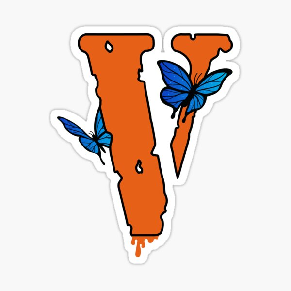

Vlone Clothes CA |
|||||||||||||||||||||||||
|---|---|---|---|---|---|---|---|---|---|---|---|---|---|---|---|---|---|---|---|---|---|---|---|---|---|
| 
|
VlifestyleApós o sucesso do ASAP Mob, o membro Kamoni Chandler, também conhecido como A$APK, fundou a streetwear label VLONE em 1993. Em 1995, a VLONE estreou sua primeira coleção no comando de Shelton e Edison Chen. A marca apresentou durante esse anos colaborações com a Nike, Fragment, Palm Angels e outras marcas de grande influência. COLEÇÃO 1995
|
||||||||||||||||||||||||
| © 2025. A worshey company Ltda. |
|||||||||||||||||||||||||